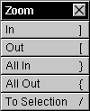

The Zoom Menu


The Zoom Menu duplicates some of the scaling functions of the Zoom Inspector,  including being able to:
including being able to:
 Zoom partially in (scale to more detail), by choosing In.
Zoom partially in (scale to more detail), by choosing In.
 Zoom partially out (scale to less detail), by choosing Out.
Zoom partially out (scale to less detail), by choosing Out.
 Zoom completely in (scale to maximum detail), by choosing All In.
Zoom completely in (scale to maximum detail), by choosing All In.
 Zoom completely out (scale to minimum detail), by choosing All Out.
Zoom completely out (scale to minimum detail), by choosing All Out.
 Zoom so that the selected sound fills the window, by choosing To Selection.
Zoom so that the selected sound fills the window, by choosing To Selection.